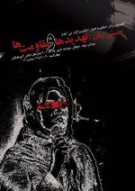

پذيرش > اخبار > گزارش نشست «جنبش زنان٬ تهديدها و مقاومت ها» در دفتر تحكيم ادوار /محیا (...)


 گزارش نشست «جنبش زنان٬ تهديدها و مقاومت ها» در دفتر تحكيم ادوار /محیا استوار گزارش نشست «جنبش زنان٬ تهديدها و مقاومت ها» در دفتر تحكيم ادوار /محیا استوار
23 فروردین 1386 - - نسخه قابل چاپ
چند دقیقه ای به 5 مانده که به دفتر تحکیم وحدت می رسیم، پله ها را بالا میرویم تا برسیم به آن اتاق کوچک که با یک پنکه سقفی خنک می شود و هنوز 5 نشده صندلی خالی برای نشستن پیدا نمی شود، می ایستم و چهره ها را نگاه می کنم، آشنایند، اگر چهره ها نه، نگاهها همان برق شیطنت آمیز آشنا را دارند.
عکس محبوبه حسین زاده و ناهید کشاورز را که روی دیوار می بینی، بیزار می شوی از دیوارهایی که سد بودنشان در این جمع شده و بعدتر است که حضورشان را حس می کنی...
می نشینی منتظر شنیدن سخنرانی ها...
اولین سخنران عباس عبدی است. عبدي مي گويد :«در ایران جنبش خالص نداریم و جنبش زنان هم از این قاعده مستثنی نیست . و به نظر من جنبش معلمان خالص تر از جنبش زنان است به این دلیل که مطالباتش صنفی است در حالیکه مطالبات زنان مرتبط با ساختار سیاسی است. در ایران حوزه سیاست بسیار گسترده است و سیاست با بسیاری مسائل مرتبط است.
فرق جنبش زنان با سایر جنبش ها در این است که مثلا جنبش معلمان مشکلی با حکومت ندارد اما جنبش زنان به چند دلیل در برابر قدرت موجود شکننده است: یکی از آنها حمایتهای بین المللی است که ساخت سیاسی نسبت به این مسئله حساس است و ویژگی دوم آنکه چون بخش از اعتراضات به قوانین است ، حکومت مضمون مطالبات را ضد دینی و ضد اسلامی معرفی می کند.»
وي ادامه مي دهد:«دو موضع برای نقد حقوق و نابرابری وجود دارد: یکی دیدگاه ایدئولوژیک است که می گوید من با این قوانین در هر زمان و برای هر شرایطی مخالفم و دیدگاه دیگر، دیدگاه تحلیلی است، به این معنا که حقوقی که الآن برای خانمها وجود دارد، بر اساس یک سری پایه های اجتماعی نوشته شده و در زمان خودش کارایی داشته ولی در حال حاضر چون این پایه ها دگرگون شده، نه تنها دیگر کارایی ندارند بلکه به صورت عکس عمل می کنند. این حقوق ممکن است در زمان خودش و حتی در بعضی جاها و شرایط همین حالا هم کارکرد داشته باشد.» وی در انتها بیان کرد که مطالبات جنبش زنان می تواند خواسته بسیاری از زنان نباشد.
سخنران بعدی شادی صدر است .و سخنانش را با اعتراض به بخشی از سخنان عبدی آغاز مي كند:«من واقعا نمی فهمم که چطور می توانیم از زاویه دید آقای عبدی به مطالبات زنان در مقایسه با قوانین موجود نگاه کنیم و بگوییم مطالبات شما نمی تواند نسخه واحدی برای مطالبات زنان در همه شرایط، جوامع و موقعیتها باشد ؛ چطور یک حکم یا قانون برای همه اجرا می شود ولی وقتی می خواهیم ان قانون را تغییر دهیم می گویند همه که مثل شما نیستند!»
شادی صدر جای خالی دوستانش را یادآور می شود، جای خالی دوستانمان را، نبود خواهران در بندمان ناهید کشاورز و محبوبه حسین زاده را، که می دانی حتی اگر عکس هاشان روی دیوار هم نبود، نمی توانستی غیبتشان را از یاد ببری.
او سپس با اشاره به دستورالعمل تازه نیروی انتظامی برای مصادیق بدحجابی بحث خود را آغاز کرد:«بحث حجاب بین زنان و حکومت قبل از جمهوری اسلامی آغاز شده و همچنان لاینحل باقی مانده است.
برخلاف چیزی که در اخبار می خوانیم که تعداد زنان بدحجاب کم است و تنها درصد محدودی از جامعه را شامل میشود؛ توجه به این نکته که هیچ قانونی به جز حجاب نیست که هر سال یک طرح ضربتی به همراه داشته باشد، به تنهایی نشان دهنده گستردگی و فراگیری موضوع است.»
وی در پایان اظهار داشت تا زمانی که اظهار نظر آزاد در مورد این موضوع به شکل یک تابو مطرح باشد، این بحث همچنان بی نتیجه خواهد ماند.
ژیلا بنی یعقوب اما از فشاری گفت که در ده ماه گذشته بر فعالان زنان وارد شده، فشاری که از 22 خرداد آغاز شده و تاکنون ادامه دارد:«برخوردها در بازداشتهای اول نسبتا نرم و مودبانه و امکانات رفاهی خوب بود ولی به تدریج برخوردهای سیستم خشن و غیر مودبانه شد و نقطه عطف این برخوردهای خشن در بازداشتهای 13 اسفند بود.
با وجود اینکه برخوردها هر روز خشن تر و رادیکال تر شده، فعالان زنان نه تنها رادیکال نشده اند بلکه هر روز مدنی تر و مسالمت امیزتر خواسته هایشان را پیگیری می کنند.»
وی با طرح این سوال که هدف سیستم از تکرار دستگیری ها و خشن تر کردن برخوردها چیست، سخنانش را اینگونه ادامه داد:«ممکن است قصد تهدید و زهر چشم گرفتن داشته باشند، یا می خواهند با تکرار این اتفاقات از حساسیت جامعه نسبت به موضوع بکاهند ولی علاوه بر اینها تکرار این حوادث باعث خواهد شد که تحمل خانواده های ما در این موارد بالاتر رود و در نتیجه نگرانی اصلی ما در هنگام بازداشت کمتر شود.»
نوشین احمدی خراسانی که شروع به خواندن متنش می کند، به تخیل زنانه اش و به این تحمل و استواری اش حسودی ات می شود و در عین حال می بالی به زن بودنت، به تخیل زنانه ای که او از آن می گوید و به محبوبه و ناهیدهایی که با وجودشان این جنبش متوقف نخواهد شد. و دلت می خواهد خواندن این کلمات که با وسواس و ان تخیل شگرف زنانه اینقدر خوب و تاثیرگذار کنار هم نشسته اند و آهنگ ارام و مطمئن صدای او دل نشینی و تاثیرشان را دوچندان کرده، تا همیشه ادامه داشته باشد: «هرچند ناهید کشاورز و محبوبه حسین زاده اکنون در زندان هستند اما قصد ندارم در این جا از قل و زنجیر و داغ و درفش بگویم و نمی خواهم از دشنه و دشنام سخنی به میان آورم، چون می دانم این چنین سخن گفتن نه ادبیات ناهید کشاورز و محبوبه حسین زاده است و نه ادبیات جنبش زنان. از سوی دیگر قصد ندارم بگویم «دشمنان» با ما چه کرده اند، چرا که در ذهنیت ناهید و محبوبه دشمن سازی جایی ندارد بلکه این کار، روش و منش کسانی است که حتا از سایه خود نیز در هراسند. نمی خواهم از جدا کردن «سره از ناسره» یا «پاک سازی» در صفوف جنبش زنان سخنی به میان آورم چرا که این چنین سخن گفتن لااقل روش ما در جنبش زنان نیست. حتا نمی خواهم بگویم ناهید و محبوبه را آزاد کنید، چراکه می دانم در دانش زنانه ی ناهید و محبوبه، آزادی مقوله ای جمعی است. بلکه امروز می خواهم از تخیل ناب زنانه ی آن دو سخن بگویم.»
سخنران آخر پروین اردلان بود. او كه مقاومت مدنی زنان طی یک سال اخیر را با مروری بر شکایات قانونی زنان نسبت به مجریان و مسئولان قضایی برخوردهای قهرآمیز و غیر منطقی نیروهای حکومتی موضوع سخنانش قرار داده بود٬ گفت :« کلیه رفتارهای مدنی و مسالمت آمیز زنان در سال گذشته با تندی و برخوردهای شدید غیرقانونی پاسخ داده شد و ما هم در برابر این برخوردهای قهری مجدا شکایات قانونی خود را به جریان انداختیم.»
پروين اردلان با یاد آوری خاطره 8 مارس سال 1384 و ضرب و شتم زنان توسط نیروی انتظامی در روز جهانی زن به بی توجهی قضایی موجود اعتراض کرد:«پرونده شکایت زنان ضرب و شتم شده در 8 مارس ان سال همچنان مسکوت مانده است. مشابه این اتفاق برای پرونده زنانی که در 22 خرداد سال 85 در میدان 7 تیر از ماموران نیروی انتظامی کتک خورده و با مراجعه به پزشکی قانونی شکایت کرده بودند نیز رخ دادو پرونده آن ها نیز معوق ماند.»
او ضمن یادآوری حملات شبانه و بدون مجوز در اسفند ماه سال گذشته به خانه های فعالان زن (منصوره شجاعی و فرناز سیفی ) و شکایات آنان به دادگاه را متذکر شد و گفت :« در واقع این ما زنان بودیم که همواره با رفتارهای آرام و مدنی خود به آن ها آموزش رفتار درست و قانون مداری داده ایم.»
اين فعال جنبش زنان با یاد آوری اصل 27 قانون اساسی در مورد تجمعات گفت:«می بینید که رفتار ما، خواسته های ما و نحوه عملکرد ما همواره قانونی بوده است و این دستگاه های قضایی و امنیتی و انتظامی بوده اند که همواره با روش های غیر قانونی جلوی حرکات مدنی زنان را برای دست یابی به خواسته هایشان گرفته است. مطالبات ما و روش ما کاملا مدنی است و اگر از نظر برخی حساسیت زا شده است به دلیل موفقیت جنبش زنان در عمومی کردن این مطالبات بوده است. »
وی در تقابل با اقدامات مدنی و قانونی زنان با اشاره به کارنامه عملکرد دستگاه های حافظ امنیت به دستگیری 70 روزنامه نگار، فعال دانشجویی، فعال جنبش زنان و زنان حامی در 22 خرداد، 33 روزنامه نگار و فعال جنبش زنان در 13 اسفند ، 3 روزنامه نگار و فعال ان جی اویی در 7 بهمن و دستگیری سه فعال کمپین در مترو در 23 آذر و 20 دی و اکنون دوفعال دیگر کمپین در 13 اسفند ..اشاره کرد و گفت:« اگر به این کارنامه ورود به منازل فعالان جنبش زنان، ضبط وسایل آنان، احضارات پی در پی تلفنی و کتبی، تهدیدات پی درپی رسمی و غیر رسمی تلفنی و تهدید به صدور حکم جلب و دستگیری و ...را هم اضافه کنیم شاید بتوان گفت دستگاه های امنیتی در حوزه زنان از پرکارترین دستگاه های ما بوده و لابد برای برهم زدن امنیت مدنی زنان هم دیپلم یا نشان افتخار، ترفیع درجه و مقام و حقوق مادی هم برایشان در پی داشته است. »
او در پایان نیز اعلام کرد ::« قطعا پس از آزادی یارانمان نسبت به بازداشت غیرقانونی آنها اعلام شکایت می کنیم هرچند چون گذشته پاسخی نگیریم. این هم خودش نوعی آموزش کاربردی به مجریان قانون است که کار غیر قانونی را با قدرت قانونی نیامیزند. »
خواندن نامه های ناهید کشاورز و محبوبه حسین زاده، نخست به سکوت وامی داردت، سپس یک باره بغض می آید اما بعد نمی توانی لبخند نزنی و ایمان نیاوری به انچه انها را نا این حد مستحکم و مطمئن ساخته و ایمان نیاوری به مبارزه شان و تحقق دیر یا زود اهدافشان...
نامه های نوشته شده در زندان محبوبه و ناهید را که می خوانند و تو می بینی بیش از خودشان از زنان رنج کشیده هم بندشان گفته اند و از حس کردن دردهای باور نکردنی تمام ناشدنی شان، با خود می گویی:« درد عزیز من، درد...ارزش درد بسیار بیشتر از همدردی است، همدردی حالتی است بزرگ منشانه و درد حالتی مردمی...»*
دو ساعتی است که ایستاده ای و حالا بعد تمام شدن برنامه است که خستگی پاهایت را حس می کنی، و یادت می آید روی زمین ننشسته بودی چون از آنجا صحبتها را می شنیدی ولی چیزی که از دست می دادی برق چشمها بود و لذت بلعیدن بی پروای نگاه ها...
*: نقل به مضمون از «آتش بدون دود»؛ نادر ابراهیمی
ارسال به
بالاترین
،
توییتر
،
فریندفید
،
فیسبوک
در همين بخش :
 پروین ذبیحی برنده جایزه حقوق بشری سازمان غيردولتى اتريشى سودويند شد پروین ذبیحی برنده جایزه حقوق بشری سازمان غيردولتى اتريشى سودويند شد
پخش کارت پستال و بروشور در روز جهانی زن در تهران
تمدید زمان برای امضای بیانیهی جمعی از فعالان زن به مناسبت هشت مارس
مجوزی که در نطفه خفه شد
بیش از 2000 امضا در اعتراض به تبعیض های آموزشی به مجلس تحویل داده شد
ديگر بخش ها :
طرح یک میلیون امضا
|
مقالات
|
سایت نوشته ها
|
اخبار
|
گزارش كمپين
|
گفت و گو
|
علیه سکوت
|
كوچه به كوچه
|
نامه های شما
|
گزارش ویژه
|
گفتگو با اعضا
|
ویژه سالگرد کمپین
|
تصویر برابری
|
دل آرام علی
|
تریبون
|
مقالات
|
تاریخ شفاهی
|
خارج از چارچوب
|
کتابخانه
|
درباره کمپین
|
کمپین در شهرها
|
کمپین در بند
|
صدای تغییر
|
ویژه 22 خرداد
|
لایحه حمایت از خانواده
|
گالری
|
عشا مومنی
|
امیر یعقوبعلی
|
خدیجه مقدم
|
راحله عسگری زاده و نسیم خسروی
|
پروین اردلان،جلوه جواهری، مریم حسین خواه، ناهید کشاورز
|
زینب پیغمبرزاده
|
سعیده امین، سارا ایمانیان، محبوبه حسین زاده، ناهید کشاورز و همایون نامی
|
احترام شادفر
|
نسیم سرابندی زاده،فاطمه دهدشتی
|
وبلاگ مهمان
|
پرونده خرم آباد
|
دستگیری ها
|
مریم مالک
|
پرستو اللهیاری
|
مهرنوش اعتمادی
|
سمیه رشیدی
|
Other Languages
|
همراهان
|
«فراخوان کمپین ده روز با بهاره هدایت»
| English
|